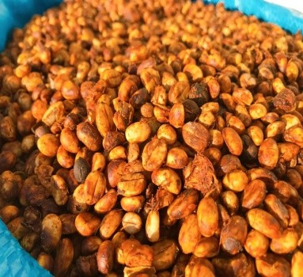
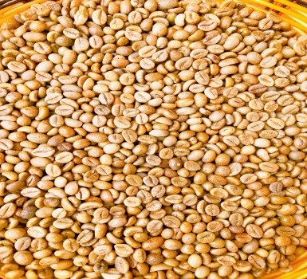
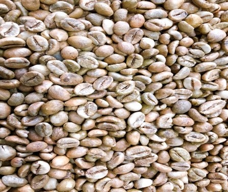
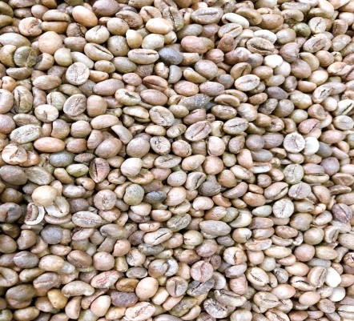

Honey
Cà phê nhân xô Robusta chế biến Honey.

S18Cà phê nhân xô Robusta Honey

S16Cà phê nhân xô Robusta Honey

S14Cà phê nhân xô Robusta Honey
Các dòng cà phê nhân xô Robusta từ vùng trồng Ea Kiết, được phân nhóm theo phương pháp chế biến và cỡ sàng.
Danh mục được hệ thống theo phương pháp chế biến và cỡ sàng ghi trong tài liệu sản phẩm của HTX.
Cà phê nhân xô Robusta chế biến Honey.

Cà phê nhân xô Robusta chế biến ướt.



Cà phê nhân xô Robusta chế biến khô.



Cà phê nhân xô Robusta Culi.

Liên hệ HTX để trao đổi về sản phẩm và nhu cầu hợp tác.
Liên hệ HTX